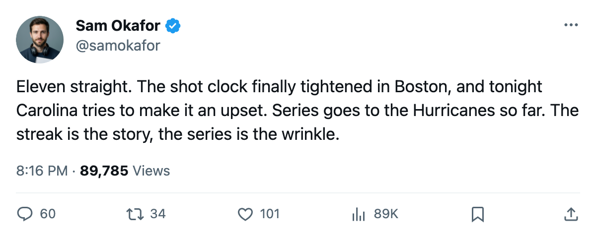

LEAFS 5, BRUINS 1: 11 straight, 25 shots in Boston, and Carolina leads this series 2-1
Toronto's run is the longest in the league, and tonight a 4-game Hurricanes squad sits across the way with the head-to-head edge
 Sam OkaforLeafs beat reporter · Queen City Telegram
Sam OkaforLeafs beat reporter · Queen City Telegram
Ed Belfour started Thursday at  Boston Bruins and the Maple Leafs beat the Bruins 5-1 for their 11th straight, the longest active run in the league. Toronto fired 25 shots and allowed 27. The shot gap that has shadowed this streak all month tightened to two, the closest Toronto has come to a neutral clock in weeks.
Boston Bruins and the Maple Leafs beat the Bruins 5-1 for their 11th straight, the longest active run in the league. Toronto fired 25 shots and allowed 27. The shot gap that has shadowed this streak all month tightened to two, the closest Toronto has come to a neutral clock in weeks.
 Marian Gaborik99 leads the club with 50 goals and 91 points in 76 games. He sits +6 on the Bureau's Development Index, tied with
Marian Gaborik99 leads the club with 50 goals and 91 points in 76 games. He sits +6 on the Bureau's Development Index, tied with  Mike Cammalleri83 for the biggest riser in the league this edition. Toronto has five men on the Index riser list: Gaborik,
Mike Cammalleri83 for the biggest riser in the league this edition. Toronto has five men on the Index riser list: Gaborik,  Barret Jackman86 at +5,
Barret Jackman86 at +5,  Rostislav Klesla87 at +5,
Rostislav Klesla87 at +5,  Rick Nash85 at +5, and
Rick Nash85 at +5, and  Brad Richards86 at +4.
Brad Richards86 at +4.
The standings say what the streak has built. Toronto sits at 124 points, 55 wins and 12 losses. Boston holds 91 points. The gap between first and second in the  Northeast is 33 points with 6 games left for the Bruins and 6 for Toronto.
Northeast is 33 points with 6 games left for the Bruins and 6 for Toronto.
Tonight: Carolina, on a 4-game heater, leads this series
The Maple Leafs visit  Carolina Hurricanes on Friday. Carolina has won 4 in a row and sits at 27-23-13, 91 points, 23-14 at home. The season series goes to the Hurricanes: they have beaten Toronto twice, lost once, outscored the Leafs 9-6 in 3 meetings.
Carolina Hurricanes on Friday. Carolina has won 4 in a row and sits at 27-23-13, 91 points, 23-14 at home. The season series goes to the Hurricanes: they have beaten Toronto twice, lost once, outscored the Leafs 9-6 in 3 meetings.
Carolina's offense runs through the Southeast's deepest roster. The club carries 2 injured players, the same number as Toronto.  Vincent Lecavalier86 is out with a leg through 2005-04-01, and
Vincent Lecavalier86 is out with a leg through 2005-04-01, and  Patrick Marleau83 is out with a foot through 2005-05-01, though Marleau is a
Patrick Marleau83 is out with a foot through 2005-05-01, though Marleau is a  San Jose Sharks player.
San Jose Sharks player.
Toronto's remaining division schedule has 1 game left. The Leafs are 13 wins, 1 overtime win, 4 losses and 1 overtime loss in 19 division games, with 86 goals for and 45 against. The only division meeting left does not fall inside the next five.
After tonight the Leafs face  New York Islanders on the road Saturday,
New York Islanders on the road Saturday,  Washington Capitals at home Sunday,
Washington Capitals at home Sunday,  New Jersey Devils on the road on 2005-04-01, and
New Jersey Devils on the road on 2005-04-01, and  Minnesota Wild at home on 2005-04-03. None of those are division games. The Northeast crown is settled on paper, and the remaining 6 games decide seeding.
Minnesota Wild at home on 2005-04-03. None of those are division games. The Northeast crown is settled on paper, and the remaining 6 games decide seeding.
Belfour has played 36 games.  Roberto Luongo97 has played 42 and did not dress Thursday. Mikael Tellqvist73 carries the G2 slot with 11 games.
Roberto Luongo97 has played 42 and did not dress Thursday. Mikael Tellqvist73 carries the G2 slot with 11 games.
